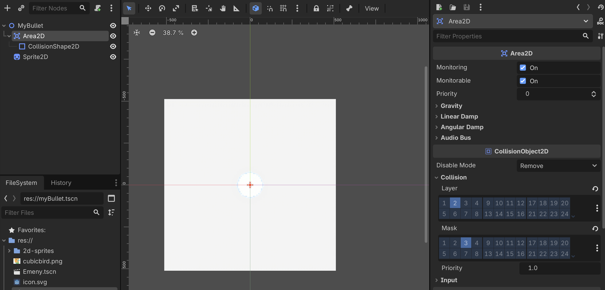

Layer/Mask 交叉配置，信号驱动碰撞销毁逻辑
queue_free()。
⚠️ Layer 是"我是什么"，Mask 是"我能碰到什么"。两者数值对应才能触发碰撞。
在 Bullet.gd 中处理 body_entered 信号：
# Bullet.gd
var direction = Vector2.ZERO
var speed = 600
func _process(delta):
position += direction * speed * delta
# 信号连接至此函数
func _on_area_2d_body_entered(body: Node2D):
# 再次确认目标身份
if body.is_in_group("enemies"):
body.queue_free() # 销毁敌人
queue_free() # 销毁子弹自己
body_entered，拖拽连接到 Bullet.gd 的函数